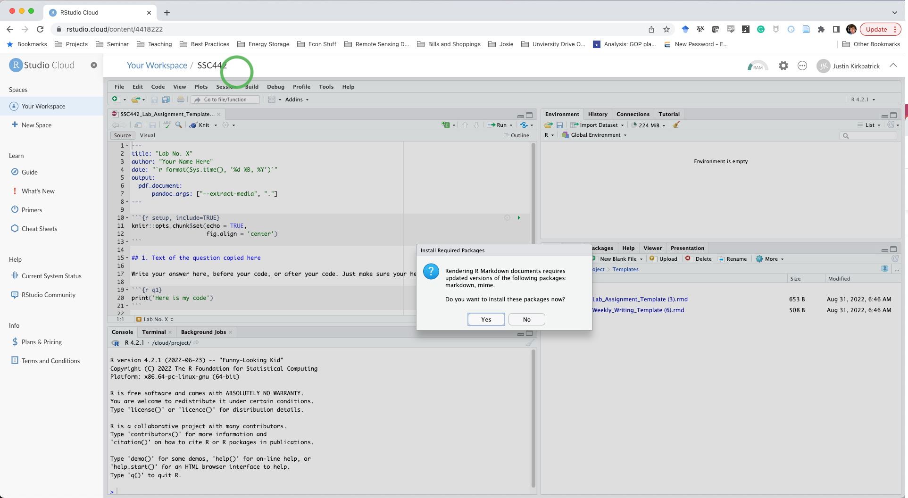

Using Rstudio Cloud
What is Rstudio.cloud Posit.cloud?
Installing R and RStudio/Posit locally (on your computer) is the preferred method. Additionally, most MSU computer labs have R and RStudio installed. However, if your computer isn’t able to run RStudio, or you run into errors that we can’t troubleshoot, using RStudio Cloud is a viable alternative. Hosted at Posit.cloud, RStudio Posit Cloud is an online, web-based version of R and RStudio. On the “pro” side, it doesn’t require anything of your system except a functioning browser and can be up and running in a few minutes. The “con”, though, is that you must have an internet connection to use it, and it is limited to 25 hours per month for the free account (and $5/month for up to 75 hours per month). You shouldn’t need more than 25 hours per month, but if you’re very new to coding, it’s possible you will.
Both Rstudio.cloud and Posit.cloud take you to the same site – posit.cloud. RStudio is in the process of rebranding to Posit. I have updated some, but not all, references here.
Setting up Posit.cloud
- Start by going to Posit.cloud and create a free account.
- Click “Your Workspace”
- In the top right corner, click on “New Project” and name it something like “SSC442”

- The “Files” tab in the lower-right pane shows your cloud project storage space. Let’s add a
templatesfolder and store the two course assignment templates there.
- Go to assignments, scroll down, and right-click on the Weekly Writing template and select “Save As…” and save it to your desktop
- Do the same for the Lab Assignment template. Clicking on the link will open the text of the file in a browser window and you cannot just copy the text into an R file.
- With the files on your computer, go back to RStudio.cloud and in the Files tab, click on “New Folder” and name it
templates - Upload the templates one at a time to the folder.
- Use the green up arrow to navigate the “Files” tab back to your main directory and create a folder for
Labsand one forWeekly Writings. - Open the Lab Assignment template
- At the top of the template in the upper-left pane, you’ll see a warning that RStudio needs to install some packages. Click “Install”

- After R finishes installing packages (less than a minute), click the “Knit” button on the toolbar.
- RMarkdown will need to install a few more packages. Click “Yes”.

- A pop-up window will open showing you the PDF of the rendered template. Congrats, you are ready to get to work!

Your RStudio.cloud version of RStudio will work just like a “local” install on a computer. Make sure you “Save As…” when you do your Lab or Weekly Writing assignments so that you don’t have to re-upload the templates. Keep a separate folder for each Lab inside the Labs to keep things clean in your workspace.